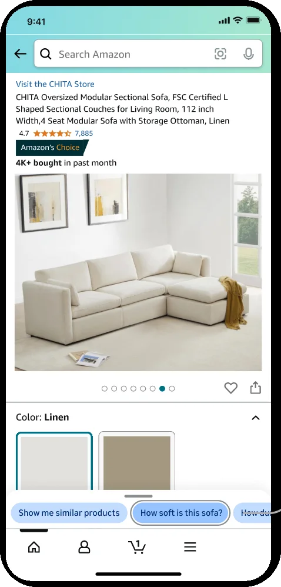
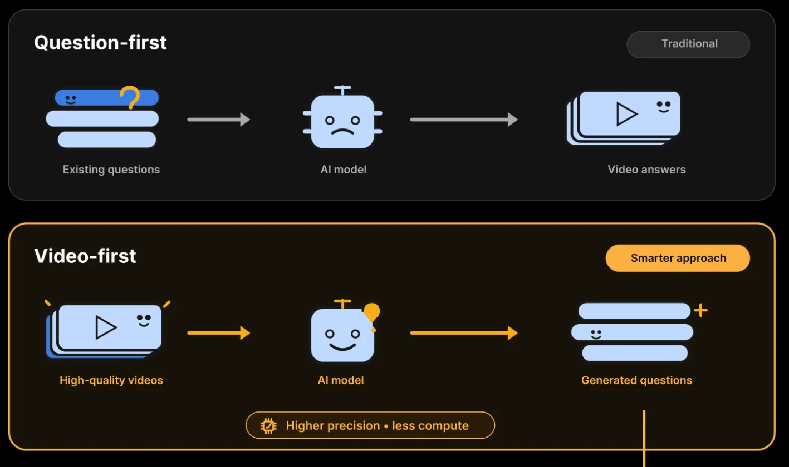

Offer the questions it can answer
Start from the evidence the AI actually has, generate the questions that evidence answers well, and offer those, instead of inviting any question and failing on the ones it cannot answer.
Where it sits in the flow
- AskThe person has a question, or a thing they want to find.
- AnswerThe AI returns something: an excerpt, a marker, a segment, a generated answer.
- CheckThe person looks at the evidence and decides whether to believe it.
- DecideThe person acts: proceeds, moves on, or corrects the AI.
What users needed
People did not know what they could ask. Faced with an open question box, they either asked nothing or asked something the system could not answer well and judged it on that. What they needed was a short set of questions they would plausibly have, each of which led to a good answer.
The problem
The natural design for an AI assistant is an open box: ask anything. But the system can only answer well where it has evidence, and its precision on arbitrary questions is limited; even a strong model gets a real share of them wrong. Every question that lands outside the evidence produces either a wrong answer or a refusal, and the person remembers the failure, not the nine successes around it.
The pattern
Reverse the direction. Start from the evidence the system holds (the documents, the recordings, the records that are known to be good), have the AI generate the questions that evidence answers well, and offer those to the person at the moment they are likely to have them. The open box stays for anyone who wants it, but most people reach a good answer by choosing a question the system is ready for.
This is cheaper as well as better: answering a generated question against evidence already matched to it takes far less work than searching everything for an arbitrary one.
What makes it hard
The generated questions have to be the person's questions, in their words, not a description of the evidence. They have to be few, and they have to change with context, so the set on a given screen is the set that matters there. And the open box must not disappear; the offered questions are a floor, not a cage.
When it fails
Questions written from the system's point of view ("What does this video show?") are ignored. Too many chips become a menu nobody reads. If the offered questions are only the easy ones, the person learns that the real answers are elsewhere, and if the open box is hidden, they feel steered.
The accessibility dividend
A set of offered questions is a list a screen reader can read out, and a question is far easier to choose from a list than to compose. For people who type slowly or who find open prompts hard to start, it is often the only way in.
In my work
In the multimodal version of Alexa, Amazon's AI shopping assistant, the first design took any question and searched for a video that answered it. I changed the direction: the system starts from the high-quality videos available for a product, generates the questions those videos answer well, and offers them on the product page. Shoppers get a higher share of right answers, and the system does less work to produce them.
In pictures


Source
- From watching to asking: how AI is reshaping how we consume shopping videos. Xinmin Weekly and Xinhuanet, June 1, 2026, in Chinese. Xinmin Weekly, Xinhuanet. A feature about my work at Amazon; the patterns on this site are my own English write-up of the same work, stated so that they apply beyond it.